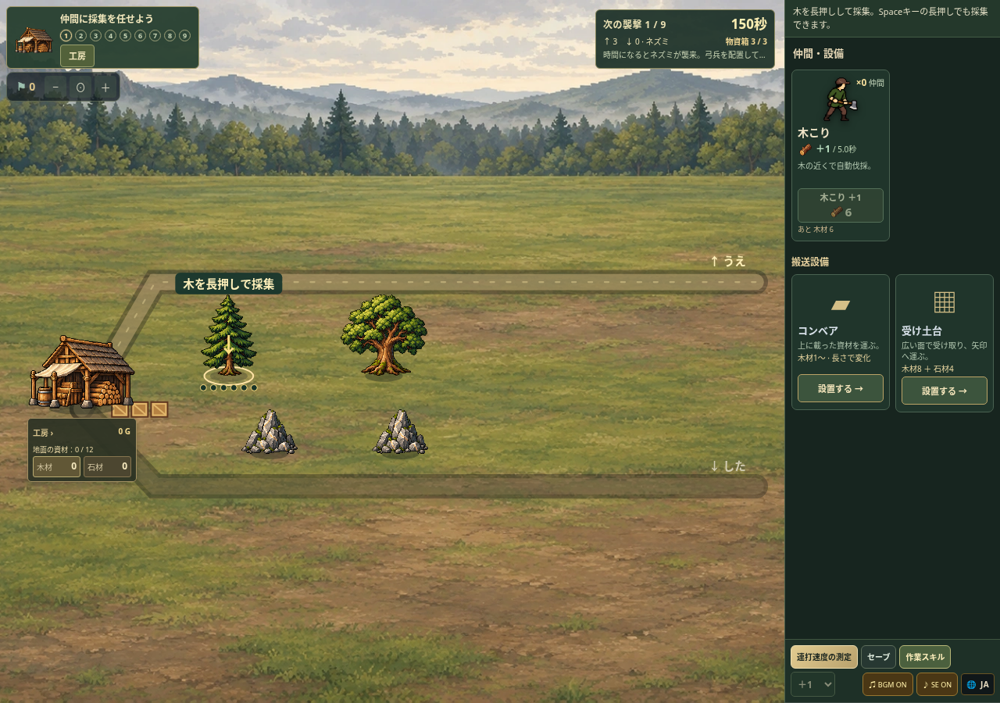
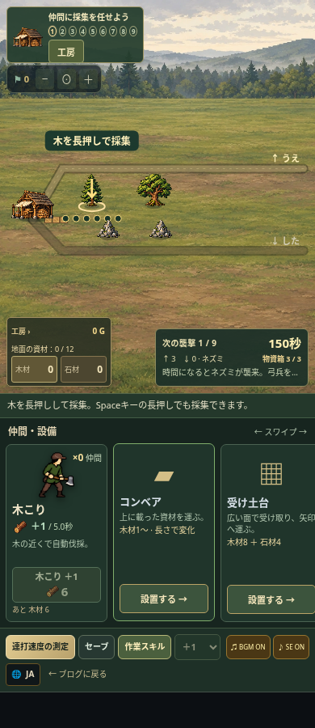
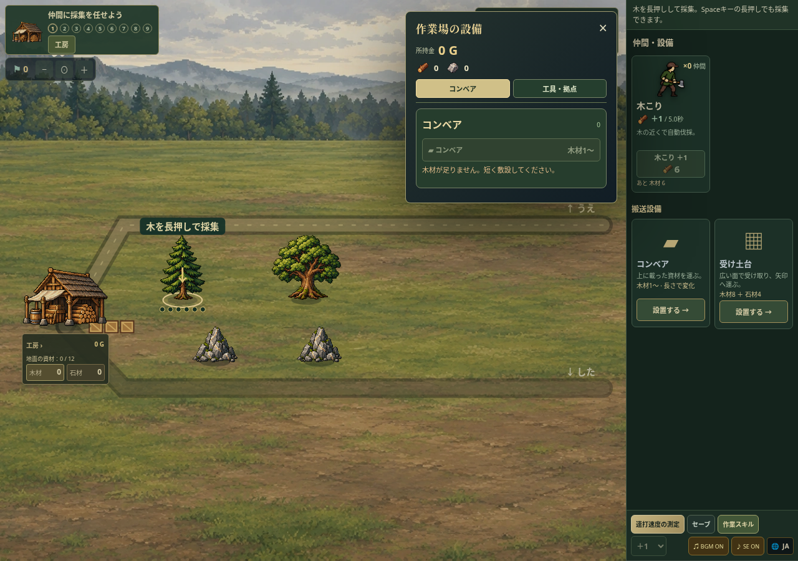
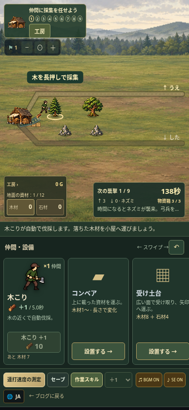

大きなモード選択を撤去。仲間・設備カードから対象を選び、押したまま予告を見て、離して配置。置き終わると採集・運搬へ戻ります。




正規に開始した保存を引き継いで、全9襲撃とクリア後の画面まで確認。ゲーム内約24分。後半は手動クリックの戦闘補助を併用し、最終戦は1度敗北した後に編成を追加して再挑戦しました。確認条件と結果
受け土台と隣接コンベアの運搬動画。今回の小型UIより前の画面ですが、資材をつかみ、載せて、倉庫へ運ぶ仕組みは同じです。
旧モード選択の画像は現在のUIとは異なります。
旧共通モードパネル · 資材蓄積の正規プレイ確認AIによるブラウザ操作・観点別レビューです。実在の児童や作者本人が試遊した評価ではありません。試遊版では広告・解析・オンラインランキングを停止しています。